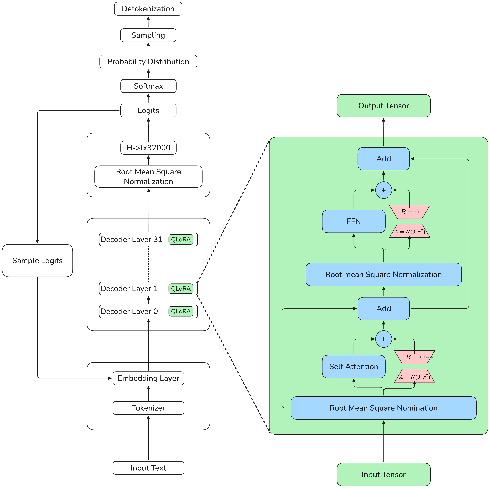
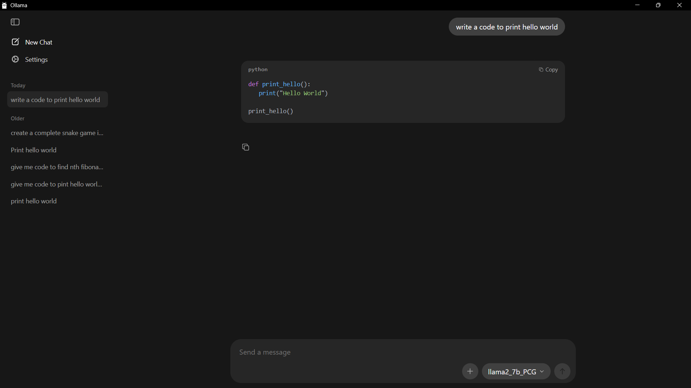
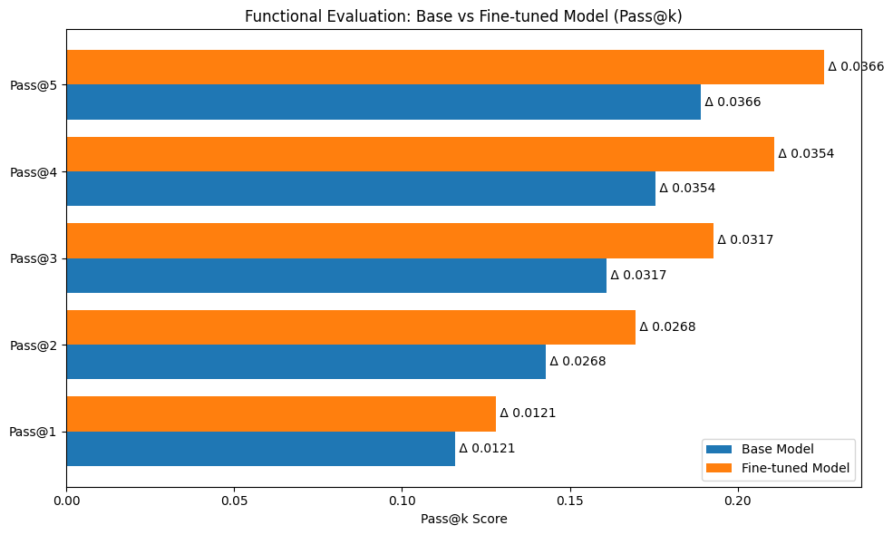
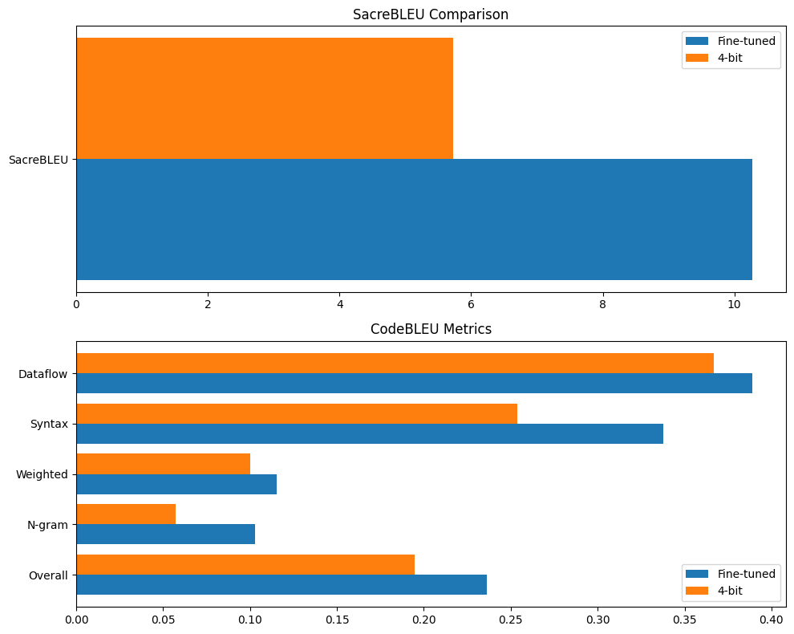

Project Detail
Llama2 Fine-Tuning for Privacy-Safe Code Generation
Goal: produce domain-relevant code generation quality without exposing private code or requiring expensive infrastructure.
Problem
The target use case required privacy control and cost efficiency, but available data was heterogeneous in quality, format, and style.
What I Did
- Used QLoRA to make fine-tuning feasible on constrained hardware.
- Curated and normalized code examples from varied sources into a usable training corpus.
- Pivoted from a base model setup to a chat-model instruction format to improve practical code output behavior.
What Failed
Initial base-model prompting produced lower-quality outputs and inconsistent formatting. This made evaluation unstable and highlighted the need for instruction-style training data.
Result
- Evaluation metrics tracked: Pass@1, Pass@5, BLEU, CodeBLEU.
- Demonstrated measurable quality gain over the original baseline setup.
- Deliverable includes runnable code, model artifacts, and reproducible evaluation steps.




What Is Next
- Increase data volume with stricter quality filters.
- Experiment with reinforcement-style optimization for task-specific behavior.
- Add before/after output comparisons for faster hiring-manager review.